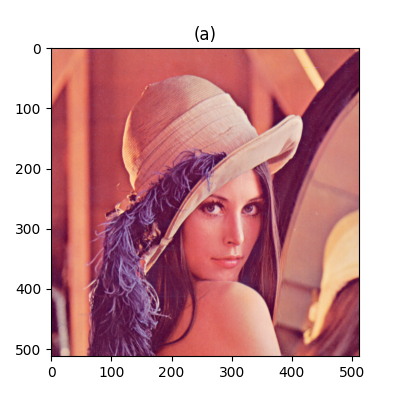
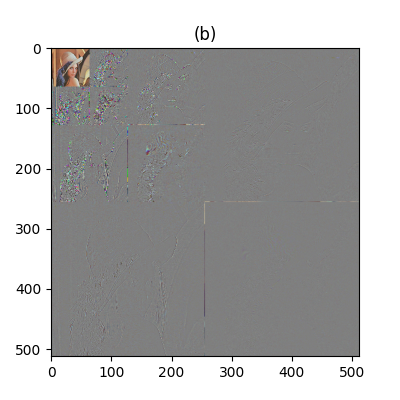
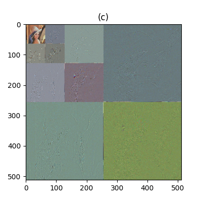

Technically, the DWT (Discrete Wavelet Transform) is a linear basis expansion which computes a critically-sampled octave-band decomposition [4, 1]. As the rest of transforms:
The 1D-DWT convolves the input signal with a set of basis functions (you can see the basis functions of several DWTs in the Wavelet Browser) defined by a cascade of filters banks, building a dyadic signal decomposition in the frequency domain.
The DWT is also described by the filters of the analysis matrix transform (the matrix \(\mathbf K\) in previous milestones). Haar defined the analysis downsampling filters \begin {equation} \begin {bmatrix} {\mathbf l}^{s+1}_n \\ {\mathbf h}^{s+1}_n \end {bmatrix} = \begin {bmatrix} \frac {1}{\sqrt {2}} & \frac {1}{\sqrt {2}} \\ \frac {1}{\sqrt {2}} & \frac {-1}{\sqrt {2}} \end {bmatrix} \begin {bmatrix} {\mathbf l}^s_{2n} \\ {\mathbf l}^s_{2n+1} \end {bmatrix}, \label {eq:Haar_transform} \end {equation} where the superindex \(s\) denotes the subband, and \(n\) refers to the \(n\)-th element of the signal. By definition (and notice that this holds for all DWTs), \begin {equation} {\mathbf l}^0={\mathbf x}. \end {equation}
As it can be seen in the Fig. 1, \({\mathbf K}_0\) is a low-pass filter and \({\mathbf K}_1\) is a high-pass filter (this holds for all DWTs). Considering the Haar filter, we can conclude that:
There exists aliasing between the filters (this is also true for all DWTs) and this is a drawback because:
These problems can be only solved using filters that have transfer functions that overlaps a smaller area1 (see Figs. 2 and 3).
Eq. ?? computes the 1-levels Haar DWT. A more general expresion for this equation (and this holds for all DWTs) is \begin {equation} {\mathbf l}^{s+1} | {\mathbf h}^{s+1} = \text {DWT}({\mathbf l}^s), \label {eq:DWT} \end {equation} where \(\cdot |\cdot \) denotes the concatenation of subbands. As can be seen in the Fig. 6, it’s possible to compute the \(S\)-levels DWT, using Eq. ?? iteratively over the low-frequency subband, generating the decomposition \begin {equation} {\mathbf l}^S_0 | {\mathbf h}^S_0 | {\mathbf h}^{S-1}_0 {\mathbf h}^{S-1}_1 | {\mathbf h}^{S-2}_0 {\mathbf h}^{S-2}_1 {\mathbf h}^{S-2}_2 {\mathbf h}^{S-2}_3 | \cdots | {\mathbf h}^1_0 h^1_1 \cdots {\mathbf h}^1_{2^{n-1}-1}=\text {DWT}^S({\mathbf l}^0), \label {eq:S_levels_DWT} \end {equation} where \begin {equation} n = \log _2(N) \end {equation} where \(N\) is the number of samples.
In the case of the Haar filters, the synthesis (inverse) \(1\)-levels DWT (that we will denote by \(\text {DWT}^{-1}\)) is the result of solving the coefficients \({\mathbf l}^{s+1}_n\) and \({\mathbf h}^{s+1}_n\) in the Eq. ??. In general, for longer DWT filters we are going to have more coefficients, but the same procedure can be used for finding the synthesis transform. Therefore, it can be written that \begin {equation} {\mathbf l}^s = \text {DWT}^{-1}({\mathbf l}^{s+1} | {\mathbf h}^{s+1}), \end {equation} and \(\text {DWT}^{-S}\), the \(S\)-levels synthesis DWT, can be computed as it is also described in the Fig. 6, by simply reversing the analysis steps.
In the decomposition described in Eq. ?? there are \(S+1\) subbands, and therefore, it is possible to compute \(S+1\) resolution levels of the analyzed signal \({\mathbf l}^0\):
All DWTs are defined by 4 filters (using a similar notation that the followed by PyWavelets) (see Fig. 7):
In the context of the DWT, orthogonality provides intersubband decorrelation, which basically means that the contribution of each subbands to the reconstruction (and this holds for all DWTs) of the signal are independent. Orthogonal filters can be recognized because:
On the other hand, in a biorthogonal DWT:
(Digital) Images are 2D (2-Dimensional, discrete in space and amplitude) signals. The 2D-DWT of an image can be computed using (1) separable 1D filters, and (2) nonseparable 2D filters [3]. Except in very special cases, all 2D-DWT implementations use separable filters by simplicity. The Figure 8 show an example of basis functions used by a \(3\)-levels 2D-DWT.
Separability in the DWT context means that we can compute the 1-levels 2D-DWT using the 1D filters, by applying them to each dimension, and using in-place operations. This procedure has been described in the Algorithms 1.2, 1.2 and 1.2, where \({\mathbf X}_{r,*}\) refers to the \(r\)-th row of the matrix \(\mathbf X\) and \({\mathbf X}_{*,c}\) to the \(c\)-th column, being \(R\) and \(C\) the number of rows and columns of the input image \(\mathbf X\). See also the Fig. 9.
\(\mathsf {Rows\_DWT}(\mathbf {X})\): \(\rightarrow \mathbf {X}\)
\(\mathsf {for}~r~\mathsf {in~range}(\mathbf {X}.\mathsf {shape}[0])\):
\(\mathsf {Columns\_DWT}(\mathbf {X})\): \(\rightarrow \mathbf {X}\)
\(\mathsf {for}~c~\mathsf {in~range}(\mathbf {X}.\mathsf {shape}[0])\):
\(\mathsf {2D\_DWT}(\mathbf {X})\): \(\rightarrow \mathbf {X}\)
In the Subfig. (a), the rows of the image has been transformed using the 1-levels (1D) DWT (this is the output of the Alg. 1.2). In the Subfig. (b), the columns of the previously rows-transformed image has been also transformed using the 1-levels DWT (this is the output of the Alg. 1.2) applied to the previous data. Subfig. (b) is also the output of the Alg. 1.2 applied to the initial image. In the Subfig. (c) the 1-levels 2D-DWT has been also applied to the LL\(^1\) subband, generating a 2-levels 2D decomposition. In the Subfig. (d) a simplified representation of Subfig. (c) has been used, where the different spatial resolution levels are highlighted.
As it can be seen in the Fig 9, the obtained 2D decomposition is expressed by \begin {equation} \begin {bmatrix} \mathbf {ll} & \mathbf {hl} \\ \mathbf {lh} & \mathbf {hh} \end {bmatrix} = \text {2D-DWT}(X), \label {eq:2D-DWT} \end {equation} where \(\mathbf l\) stands for low-pass filtering and \(\mathbf {h}\) for high-pass filtering. Notice that \({\mathbf ll}={\mathbf ll}^1\), \({\mathbf lh}={\mathbf lh}^1\), \({\mathbf hl}={\mathbf hl}^1\), and \({\mathbf hh}={\mathbf hh}^1\).
Eq. ?? describes the \(1\)-levels (analysis) 2D-DWT. Replacing \({\mathbf ll}={\mathbf l}^{s+1}\), \({\mathbf X}={\mathbf l}^s\), and \({\mathbf hl}, {\mathbf lh}, {\mathbf hh}\}={\mathbf h}^{s+1}\) in the previous expression, the \(S\)-levels 2D-DWT of \({\mathbf l}^0={\mathbf X}\) (\(\text {2D-DWT}^S({\mathbf l}^0)\)) can be computed applying \(S\)-times \begin {equation} \{{\mathbf l}^{s+1}, {\mathbf h}^{s+1}\} = \text {2D-DWT}({\mathbf l}^s) \end {equation} to the low-frequency subband \({\mathbf l}^s\). As an example, the Fig. 10 shows the \(3\)-levels 2D-DWT of the image lena.
|  |  |  |
| (a) | (b) | (c) |
Similarly to the 1D case, a \(\text {2D-DWT}^S(\cdot )\) provides \(S+1\) spatial resolution levels. An example of this can be seen in the Subfig. 9-(d), where there are 3 possible resolutions. In the Subfig. 10 there are 4 resolutions.
The \(\text {MDWT}\) provides dyadic spatial multiresolution and full temporal multiresolution.
To find the gains in the 2D case we can compute the energy of the signal generated by the inverse transform of the unitary impulse discrete 2D signal \begin {equation} \delta _{i,j}(x,y) = \left \{ \begin {array}{ll} 1 & \text {if $i=x$ and $j=y$}\\ 0 & \text {otherwise}. \end {array} \right . \end {equation}
Notice that (see the Fig. 10) the low-frequency subbands concentrate more of the energy (and the visual information). Therefore, given a target bit-rate, these subbands are going to contribute more the the quality of the reconstruction.
In the case of biorthogonal transforms, and in absence of RD optimization, the quantization steps uses for each subband should be inversely proportional to the L\(_2\) synthesis gain of the subbands2 [2]. However, notice that in orthogonal DWTs all the subbands have the same gain.
As usually, we can use \begin {equation} \Delta _0=\Delta _1=\dots =\Delta _{N-1}, \end {equation} where \(\Delta _i\) is the quantization step used for the \(i\)-th frame of the sequence. However, notice that this quantization pattern does not necessaryly optimizes the RD tradeoff. The RD curves of each frame should be taken into consideration in order to perform a good rate-control.
[1] J. Kovačević, V.K. Goyal, and M. Vetterli. Fourier and Wavelet Signal Processing. http://www.fourierandwavelets.org/, 2013.
[2] M.W. Marcellin, M.A. Lepley, A. Bilgin, T.J. Flohr, T.T. Chinen, and J.H. Kasner. An overview of quantization in JPEG 2000. Signal Processing: Image Communication, 17(1):73–84, 2002.
[3] K. Sayood. Introduction to Data Compression (Slides). Morgan Kaufmann, 2017.
[4] M. Vetterli, J. Kovačević, and V.K. Goyal. Foundations of Signal Processing. Cambridge University Press, 2014.


{kind=link}